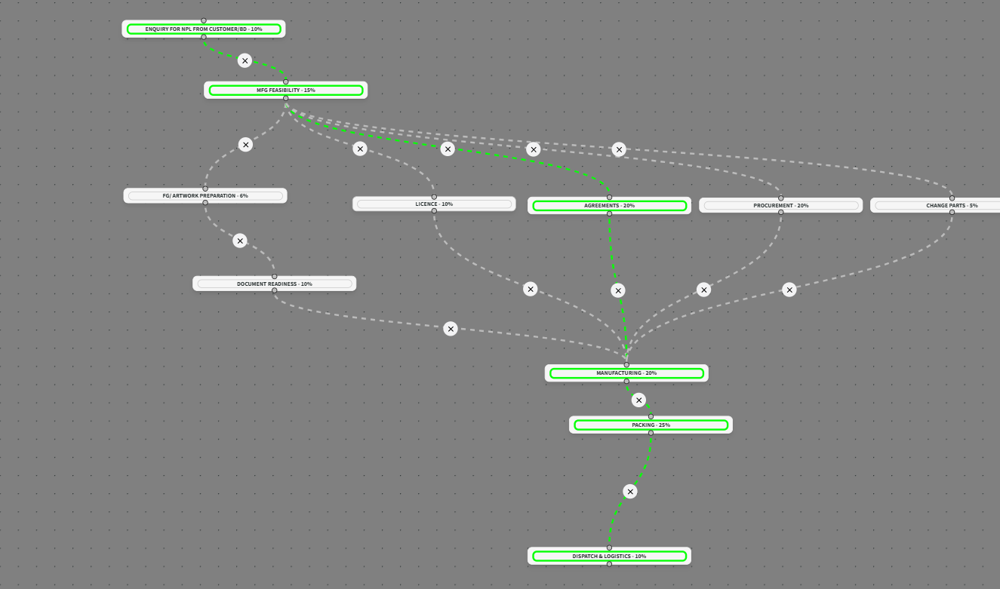

GoLanzar is Pivot Path's launch management platform. It plans your launch backwards from Day 1, the day the patent expires, so nothing lands late.
Day 1 does not move. GoLanzar makes every function meet it.
The day a patent expires is the day you can launch, and the day a competitor can too. GoLanzar starts from that date and works backwards, giving every activity and milestone a timeline that lands on it. Three things follow.
GoLanzar starts from the patent-expiry date and allocates a timeline to every activity, so the plan is built around the date that matters.
Regulatory, procurement, packaging, manufacturing and the rest work from a single launch plan, not a dozen spreadsheets.
The critical path shows which delay actually moves Day 1, so it is owned before it costs you first-to-market.
One coordinated plan across every launch function, built around the date that matters.
GoLanzar lays out every function and its dependencies as one graph, scheduled backwards from the patent-expiry date. The critical path, the sequence that actually sets the launch date, is highlighted, so you see where a delay costs you time and where it does not.

The launch as a critical-path graph; the highlighted path is the one that sets Day 1.
You map your real launch workflow with a drag-and-drop builder, the way your teams actually work, then keep it as a template. The next product of the same shape starts from a proven plan, not a blank page.
Build the launch flow visually, dropping in each activity and milestone and linking them on the canvas.
Link activities where one must finish before the next begins, or leave them free. Your process, digitised.
Save a workflow as a template and keep as many as you like, by product type, country, dosage form, therapeutic category or site.
Once the plan is built, GoLanzar does two things well, and does not pretend to do more. It coordinates every function onto one plan, and it tracks that plan against Day 1.
GoLanzar is built and run on PivotOS, the validated GxP cloud foundation.
Without one plan, a launch is run from status meetings and a stack of spreadsheets, rebuilt from scratch each time. GoLanzar changes that.
Two views from one launch: the product record that holds every function, and the drag-and-drop canvas where the flow is mapped.
Day 1 is the day the patent expires, and the day the market opens to everyone. Because every function reports into one plan scheduled backwards from that date, a delay that threatens it is visible and owned while there is still time to act, not discovered when the window has already closed.
See your whole launch on one critical-path plan, built to hit the patent-expiry date.